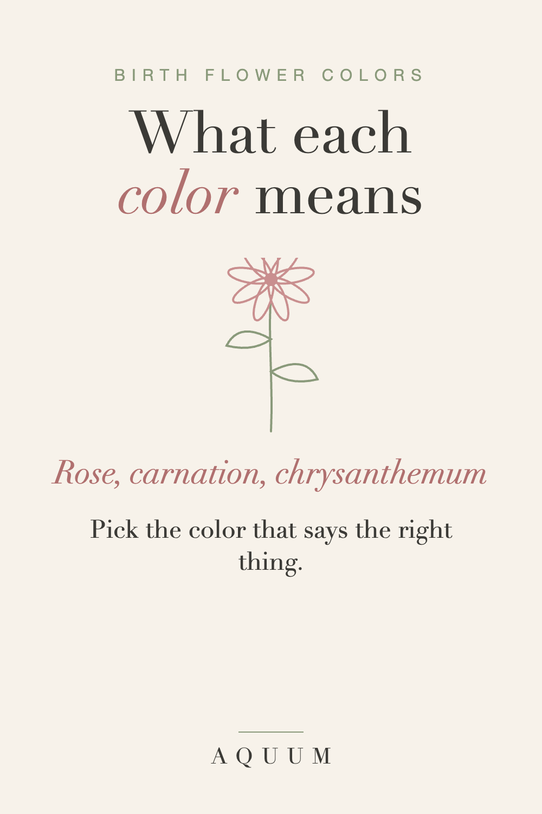

Birth Flower Color Meanings: What Each Color Says Before You Choose
2026-09-30
Written by the team behind Aquum, a small birth flower gift shop. How we make money.

A birth flower already carries a meaning. The color can sharpen it, soften it, or, occasionally, send a message you didn't intend. Three birth flowers in particular change a lot by color: the June rose, the January carnation and the November chrysanthemum.
Rose (June)
The rose means love in all its forms, and the color decides which form:
- Red: romantic love
- Pink: gratitude and admiration
- Yellow: friendship and joy
- White: respect and new beginnings
- Orange: enthusiasm and desire
A yellow rose for a best friend says something a red one never could. More in the June birth flower guide.
Carnation (January)
The carnation means love that doesn't give up:
- Pink: a mother's love. Carnations have been tied to Mother's Day since it began in the United States.
- Red: admiration and deep affection
- White: pure love and good luck
More in the January birth flower guide.
Chrysanthemum (November)
The chrysanthemum means honest friendship and good fortune:
- Yellow: friendship and warmth
- Red: love and deep affection
- White: honesty and loyalty
- Purple: wishing someone well
One caution: in parts of Europe, white chrysanthemums are associated with funerals. For someone with that background, choose yellow or red. More in the November birth flower guide.
The flowers that come in one main color
Some birth flowers are known mostly for one color, so the meaning doesn't change much:
- February · Violet: purple, quiet loyalty
- March · Daffodil: yellow, new beginnings
- April · Daisy: white with a yellow center, uncomplicated joy
- May · Lily of the Valley: white, happiness returns
- December · Paperwhite: white, good wishes for what's ahead
How to choose a color for a gift
- Start with the relationship. Romantic, family, friend or thank-you: pick the color that matches.
- When in doubt, go soft. Pink and white rarely send the wrong message.
- Say it in the card. "I chose yellow because it means friendship" turns a color into a gift.
Every month's flower and meaning is in what is my birth flower.